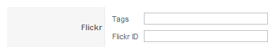

Flickr Element
In this tutorial you learn how to configure a Flickr element with its specific values to use it in the ZOO extension.
Flickr is a third-party web service for foto sharing.
How you create an element like this, we show you in {doc: create-new-types text: this tutorial}.
1. Configuration

Here is the description of the different values:
Name: Type in the name for this element which will be used later on, for example in the item creation view or as label in the frontend. With the name you also can identify the element, when you assign it to a template position.
Description: The description will show up as a tooltip in the item creation view
Height/Width: Type in the dimensions of the Flickrbox, that appears. You can find more informations on the Flickr website.
2. Element Assignment

Every element has to be assigned to a template position to show up for the visitors in the frontend of the site. See {doc: assign-elements-to-layout-positions text: this tutorial} how to assign elements to the template positions.
You can set whether the label is shown in the frontend or not. If you choose Yes the name of the element (see previous step) is used for it. If you do not want to use the elements name as label you can type in an alternative. Of course the Show Label option have to be enabled to show the alternative label.
3. Item Creation

This is how the element looks when you create an item. See {doc: create-and-manage-items text: this tutorial} for creating an item. Type in your Flickr ID and in the tag field the name of the album you want to show.